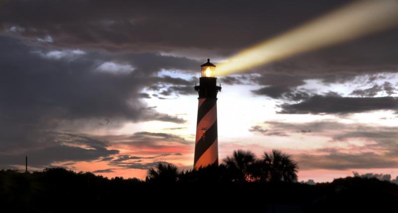
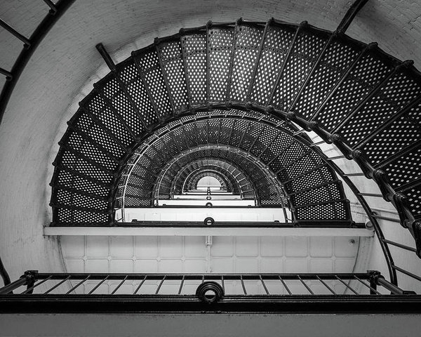
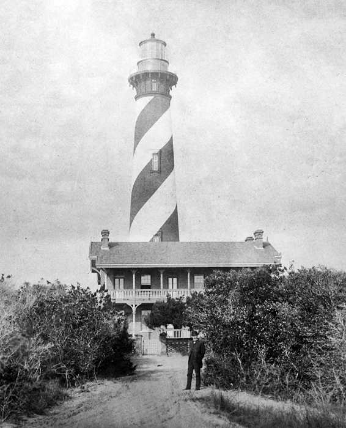

The lighthouse at moonrise

Shown above is a photograph of the St.Augustine lighthouse at dusk
Experiences
Here at the St.Augustine Lighthouse in St.Augustine, Florida, you can experience chilling ghost tours in the dark tower, or simply tour the lighthouse yourself. Will you make it all the way to the top? Or will you quit after the first ghost tale...

Staircase at St.Augustine, some have said to have seen a ghost staring down from the top.

This photo, taken in the 1900s shows how old the St.Augustine lighthouse is.
Visitor Reviews
Hezzy_T from Missouri says
"The whole area is so gorgeous to walk around and see, from the entrance to the top of the lighthouse."
Thomas S from Delaware says
"The best ghost tour in St.Augustine!!."
Terry L from Florida says
"Breath taking views and very informational. Worth the trip to the top!."
About Panda Travel Agency
For more information either call us at 555-905-1982 or email us at info@pandatravel.org
Email Us!